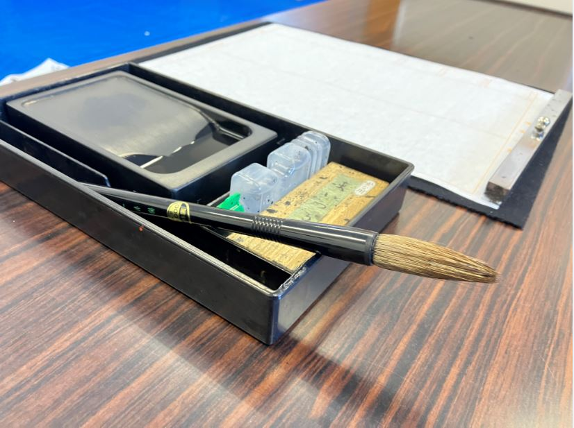
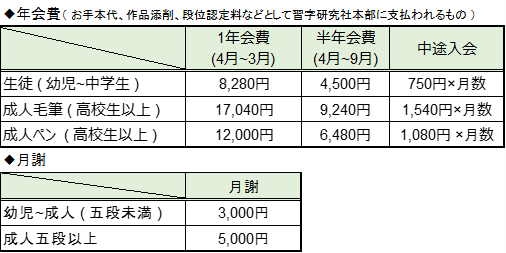

花翠書道教室

教室について
お子様に字が上手になってほしい！
自身もきれいな字を書きたい！
幼児~大人まで幅広い世代に習字の魅力を伝える事を目的に書道教室を開催しています。
■ 習字の重要性(メリット)について
- 字を書く事によって集中力が身に付く
- 自ら課題に向かう事で自主性が身に付く
- 様々な学校・年齢・性別が違う中で関わり合う事でコミュニケーション能力が身に付く
- 字が上達する事で自信につながり積極的に物事にむかえるようになる
■ 保護者の方へ
PCが普及している現代において字を書く機会は減少していると思っていませんか？
確かに昔に比べるとかなり機会は減ってきているかと思います。
しかしながら...社会に出てみると意外と自らがペンを持ち書く機会も多いと感じる方も多いのではないでしょうか？
将来お子様に「 習字をやっていてよかった！ 」と言ってもらえたら----保護者の方にとっても指導者としても喜ばしいことです。
楽しく学び、将来につながる指導を目指しています！
■ 指導者について
- 前川 有紀子
- 習字研究社 玉城支部 支部長 (本部 : 福岡県)
- 2000年開業
- 習字研究社 九段
- 習字研究社のURLはる
■ 受講回数
幼児~成人 ( 五段未満 )
成人五段以上
■ 料金

■ 問い合わせ
電話はこちらをクリック
メールはこちらをクリック